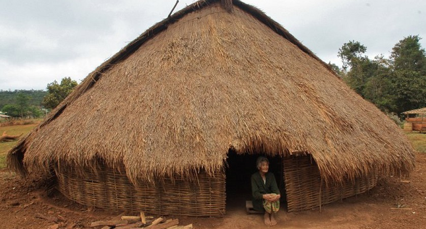
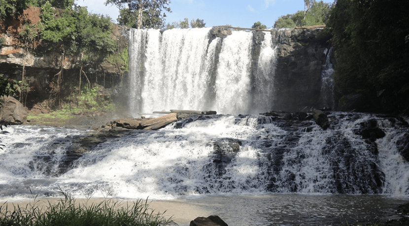
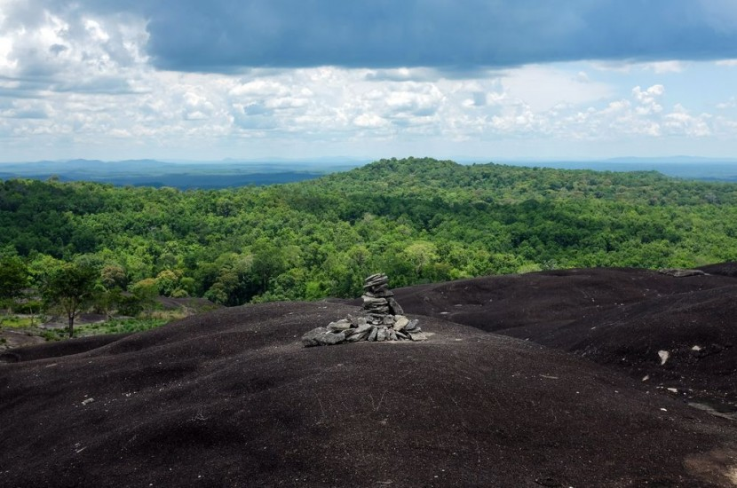
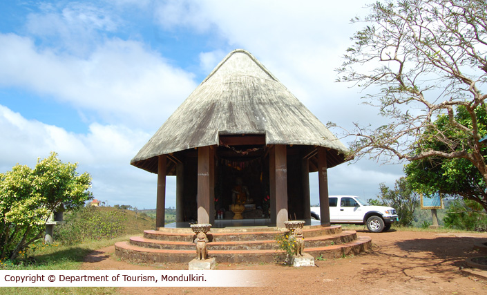
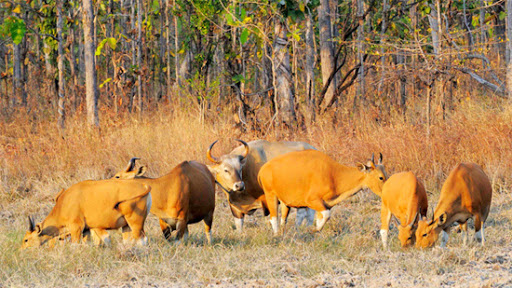

Mondulkiri is an eastern province of Cambodia, which is the most sparsely populated province in the whole country although being the largest province in Cambodia. The province is chock full of natural beauty, with thickly forested mountains, powerful waterfalls and the lush green rolling hills of the western side. Despite the growing deforestation, especially due to the valuable minerals remaining in the deep red, fertile ground, Mondulkiri has still one of the biggest successional woodlands of Cambodia.
The town is worth strolling about for itself and there are a number of means to go about enjoying the city. Going about on foot is perhaps the most leisurely and most rewarding. Here, the pace may be quite laid-back to some, but all in all it’s a pleasant place to be at. Along the streets, there are many shops offering services and goods ranging from the basic necessities to fine silk; chic galleries with beautiful display of local art pieces and lots of souvenirs. For food, there are whole streets catering for the travellers tastes, with tasty Khmer fares such as Amok and ‘Khmer curry’, or pizzas, hamburgers and other international cuisines. Explore the backstreets for more shops and restaurants and have fun. In the evening, stroll down Pub Street and mingle with the crowd. There is never a lack of colours while in Mondulkiri.
This plant naturally grows on trees all over the forests of Cambodia. (I’ve seen it before in Ratanakiri, Mondulkiri.) When I was hiking in Mondulkiri, the guide said it is good luck to see one of these plants for your wedding, but it is illegal to harvest and sell them. However, I saw them for sale all over Mondulkiri. I tried a number of Google searches and haven’t found an explanation. If you know about this cultural phenomenon, post in the comments below!
Pahlung Village It's possible to go on an elephant trek at this small village. It's a good idea to come out here the day before (possibly on your way to Bousra Waterfall) to organize it so they have the animal ready to go the next morning, instead of out working in the jungle. You can take a half- or full day trip in the surrounding area. It?s good to wear long pants and bring some mosquito repellent, drinking water and food. To get there, just head north from Sen Monorom. When you get to the fork in the road, go right. The village is about 8 km from town. People in the small houses on the right can fetch the elephant guy for you. If you go by moto-taxi, the driver can help with the translation of arranging the tour. The guy at the town tourist office, if you can ever find him there and he's not sleeping. Can also set the tour up for you. But he takes a cut. Figure around US$ 15 for a half day or US $ 30 for a full-day tour.Pahlung Village, Mondulkiri is one of the well known tourist attractions in Mondulkiri. It is just an hour?s drive from the main town center. The scenic rustic setting of Pahlung Village, Mondulkiri along with diverse regional culture draws thousands of tourists and travelers. Pahlung Village in Mondulkiri is also one of the popular centers of excursion in Cambodia. Travelers can undertake an elephant trekking trip to the village. The village is on the route to the Bousra Waterfalls. The route is wonderful and takes place through winding tracks, sprawling rainforests and idyllic waterfalls. The village is located in the northern part of Senmonorom.
Chrey Thom Waterfall is located at Sen Monorum District in 43-kilometer distance from the provincial town. During the dry season, the waterfall has 15 meters height and 2 meters diameter, and during the rainy season, the waterfall has 11 meters height and 8 meters diameter. The waterfall fall us near a plantation of Srolao trees and a big, branchy Chrey tree.The provincial tourist service is working with the local authority to prepare this site as a tourist destination in place of Busra waterfall, which is inaccessible during rainy season.The Chrey Thom Waterfall is situated in Poules and Pouchhob Villages, Dakdam Commune, Oreang District; 20 km away from the provincial town. It can be accessed by the red pebble path.There are more than 208 families living in the Chrey Thom area of 303.555 ha, whose main occupations are farming.The resort provides plenty of opportunities for picnicking, hiking, swimming, especially for visiting an ethnic village and purchasing some souvenirs beautifully produced by ethnic groups.Its main points of interest are a spectacular waterfall, dramatic mountainous forest, impressive undulating hills, and fresh air.Chrey Thom Waterfall is one of the loveliest Tourist Attractions in Mondulkiri. Tourists love spending a day at the site of this beautiful waterfall only for its natural beauty. Chrey Thom Waterfall, Mondulkiri is a natural waterfall and is surrounded by lush green woods.
Phnom Nam Lear Sanctury is 80 km (4h) From Provincial Town. Description: Natures & Wildlife PreservesLocation: Pichinda District Border of Daklak Provinece (Vient Nam)Phnom Nam Lear Sanctuary, Mondulkiri is known for the beautiful scenic beauty and idyllic surroundings. The sanctuary is one of the main wild life reserves in the province. The idyllic environment and the wide variety of flora and fauna make Phnom Nam Lear Sanctuary, Mondulkiri very popular to both local people and foreign tourists. Phnom Nam Lear Sanctuary in Mondulkiri is a wildlife reserve and is home to wide species of local birds and animals. It is located around 80 kms from the main town center of Senmonorom. It takes around 4 hours to travel from the main town center to the sanctuary by car. The journey is very pleasant as the route goes through winding routes and idyllic forests. Phnom Nam Lear Sanctuary is also a major excursion point in the province. Travelers can also camp in the sanctuary in the night. There re small cottages where one can also stay. The sanctuary is full of beautiful cliffs, small waterfalls, streams and sprawling greenery. Various tours are also undertaken to Phnom Nam Lear Sanctuary, Mondulkiri. There are travel agencies which organize such tours. Trekking tours are also undertaken by nature lovers. The popularity of the sanctuary as one of the main tourist attractions in Mondulkiri has boosted eco tourism in Mondulkiri to a great extent.
The Yok Sros Phlom or Phnom Dos Kramom Resort is located in Dos Kramom Village, Sokhdom Commune, Sèn Monorom District; 3 km away from the provincial town. It can be accessed by path.There are more than 2,092 families living in the Phnom Dos Kramom area of over 100 ha, whose main occupations are farming.This resort is managed by the Department of Culture and Fine Arts. Its main point of interest is the mountain covered by grass from its foot to its top, which big trees hardly grow on except near valleys and streams. The mountaintop overlooks the beautiful landscape of the provincial town of Mondul Kiri and majestic natural mountainous forest.
Phnom Prich Sanctuary, Mondulkiri is one the popular tourist attractions in Mondulkiri. The sanctuary is located amidst the Eastern Plains which is known for the sprawling rain forests and beautiful rivers. Thousands of tourists and nature lovers visit Phnom Prich Sanctuary, Mondulkiri to experience the idyllic scenic landscape. Phnom Prich Sanctuary in Mondulkiri is a part of the initiative undertake by the Cambodian Government to conserve the diverse flora and fauna in the country. The sanctuary forms part of the 1 million hectare of land in the Eastern Plains. The WWF has also helped the government in the undertaking.The Phnom Prich Sanctuary is home to some of the endangered species in the country. There are wide varieties of mammals, birds and reptiles. Some of the protected species in the sanctuary are tiger, Asian elephant, wild water buffalo, jungle cat, and deer and so on. Some bird species include sarus, crane and giant ibises. The sanctuary provides a wonderful habitat for these animals.Various trips are undertaken to the Phnom Prich Sanctuary, Mondulkiri. There are also provisions for camping in the forest. There are single day as well as half day trips available. Travelers can take useful information on the sanctuary from the tourist center and the travel agencies.